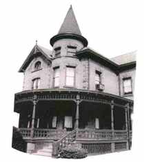

Our beginnings
Italian Americans in Poughkeepsie receive a charter for a local Sons of Italy chapter.
Our story
A place to remember where we come from—and celebrate what we share today.

The Italian Center is an independent fraternal organization celebrating Italian culture and Italian American ancestry in the Mid-Hudson Valley.
We connect members through shared traditions, cultural learning, and community life. Each gathering is another opportunity to pass that heritage on.
Be part of our storyOur journey
Italian Americans in Poughkeepsie receive a charter for a local Sons of Italy chapter.
Local Italian American organizations come together as an independent organization.
The center welcomes its first female member following changes to its bylaws.
The center moves to Wappingers Falls, bringing its community spirit along.

People make the place
Our members and volunteer leaders keep the center moving, from planning celebrations to supporting the next generation.
Meet our leadershipThere’s a place for you here